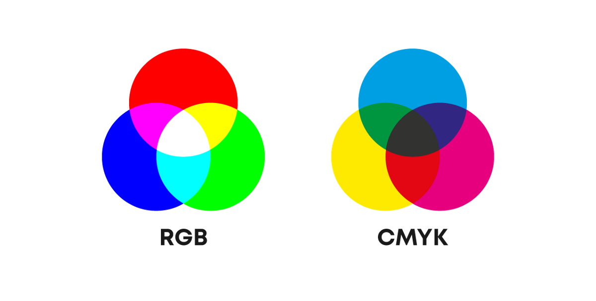
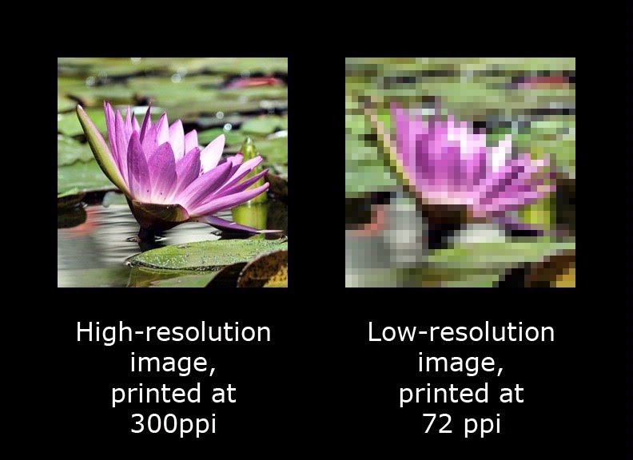

Las imágenes digitales son imágenes que son representadas como un conjunto de datos discretos que pueden ser almacenados, procesados y transferidos por una computadora digital. Estos datos discretos son usados para representar u obtener unidades llamadas "píxeles", que tienen el color de una pequeña área de la imagen original.
Existen dos tipos principales de imágenes digitales:
Vector
Las imáges vectoriales describen una imagen a través de entidades geométricas basadas en fórmulas matemáticas. Por ejemplo, un círculo en una imagen vectorial es definido por un punto central y un radio.
Al estar compuestas por entidades geométricas, en vez de píxeles discretos, es posible "aumentar" una imagen vectorial sin que se vean las imperfecciones de una imagen bitmap, dado que la representación geométrica no cambia con el "zoom".
Mapa de bits (Bitmap o raster)
Las imágenes bitmap están formadas por una tabla o matriz de píxeles, cada uno con un valor que representa su color.
Toda imagen digital, independientemente de su uso o fuente, está formada por una colección bidimensional de píxeles. Los píxeles de una imagen pueden ser visualizados en una pantalla, en una hoja impresa, entre otros medios.
Cada pixel de una imagen digital tiene un color asociado. La forma en que una imagen digital representa el color de cada pixel es conocida como su "modelo de color".
Los dos modelos de color más comunes son RGB y CMYK:
RGB
Está compuesto por tres colores: Rojo, Verde y Azul (Red, Green & Blue). Este modelo representa cualquier color como una suma de las tres magnitudes de rojo, verde y azul. Negro es un 0 absoluto en los tres colores básicos, mientras que el color blanco se obtiene como una sobreposición total de los tres colores.
El modelo RGB es usado por los pixeles de la gran mayoría de pantallas.
CMYK
Está compuesto por cuatro colores: cian, magenta, amarillo y negro (Cyan, Magenta, Yellow & Key Black). Este modelo representa cualquier color como una resta de las tres magnitudes de sus colores básicos. Blanco es un 0 absoluto en los colores básicos, mientras que el color negro se obtiene como una sobreposición total de los cuatro colores.
El modelo CMYK suele ser utilizado por impresoras.
La siguiente imagen ilustra las diferencias en la composición de colores con los modelos RGB y CMYK.
El tamaño de una imagen es simplemente la cantida de píxeles que la integran. Al ser rectangulares, esta cantidad puede ser obtenida multiplicando los píxeles de ancho por los píxeles de alto de una imagen.
La unidad de tamaño es el píxel porque no existe una medida única para el tamaño y espaciado de los píxeles en las diferentes pantallas, por lo que intentar medir una imagen en centímetros o pulgadas es imposible.
Por ejemplo, si una imagen tiene 768 píxeles de ancho y 572 píxeles de alto, su tamaño sería (768px * 572px), lo que equivale a 439,296 píxeles.
La resolución de una imagen es el número de píxeles que contiene en un cierto espacio. Existen dos unidades de medida para representarla: píxeles por pulgada (ppi) y píxeles por centímetro (ppc). La más común es ppi.
Aunque no es posible determinar la calidad de una imagen con base solamente en su resolución, en general mientras mayor sea la resolución de la imagen, más nítida se verá y más claros serán sus detalles.
La profundidad de color de una imagen es la cantidad de bits que usa para representar cada color de su modelo de color por un píxel. Mientras más bits de profundidad tenga una imagen, más colores diferentes se podrán representar. Casi todas las imágenes que usan el modelo RGB tienen una profundidad de color de 8 bits, lo que les permite representar 256 tonos distintos por cada color (256 por rojo, 256 por verde y 256 por azul).
El número de canales de color de una imagen es el número de colores que compone cada uno de sus píxeles. Una imagen monocromática tiene un solo canal (puede ser cualquier color, pero comúnmente el canal es blanco y negro). Las imagenes RGB tienen tres canales, uno por cada color básico RGB, que son sobrepuestos para obtener casi cualquier color.
Una imagen incluye un volumen de información considerablemente mayor al de un archivo de texto común, debido a la cantidad de píxeles en las imágenes durante las últimas décadas. El volumen de la información de una imagen depende directamente de:
El tamaño de una imagen, sin ningún tipo de compresión, se puede estimar multiplicando el tamaño de una imagen en píxeles por la cantidad de bits usados por pixel. Los bits por pixel dependen del número de canales de color y la profundidad de color de la imagen.
Por ejemplo, si se tiene una imagen muy pequeña de 200px por 100px, con modelo de color RGB y profundidad de color de 8 bits, su tamaño sería:
Existe una gran variedad de formatos para almacenar y transferir imágenes digitales. Por lo general, el formato utilizado depende del uso que se le va a dar a la imagen. Si es necesario almacenar una imagen de alta resolución capturada por un fotógrafo profesional, usualmente se opta por sacrificar el tamaño del archivo para obtener una mayor calidad. Si lo que se necesita es una imagen para una publicación en redes sociales o para un anuncio en un sitio web, se suele comprimir la imagen para obtener un archivo más pequeño, a costa de la calidad de la imagen.
La siguiente tabla muestra algunos de los formatos de imagen más utilizados en la actualidad, incluyendo algunas de sus características.
| Nombre completo | Extensión | Compresión | Pérdida |
|---|---|---|---|
| Joint Photographic Experts Group | JPEG, JPG | Sí | Sí |
| Graphics Interchange Format | GIF | Sí | Sí |
| Portable Network Graphics | PNG | Sí | No |
| Tagged Image File Format | TIFF | Sí | No |
| Bit Map | BMP | No | No |
| Datos en crudo | RAW | No | No |